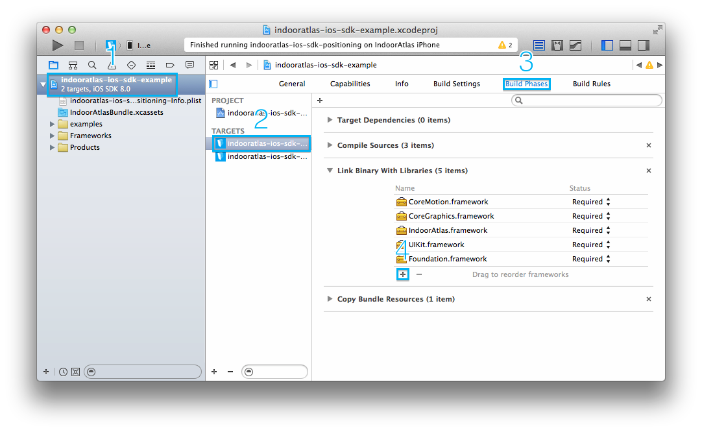
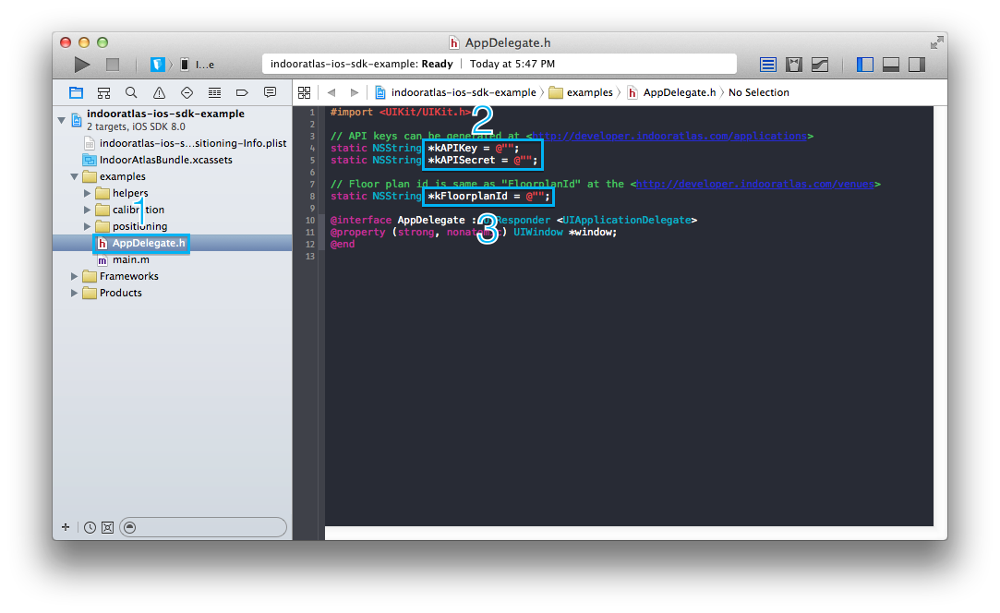
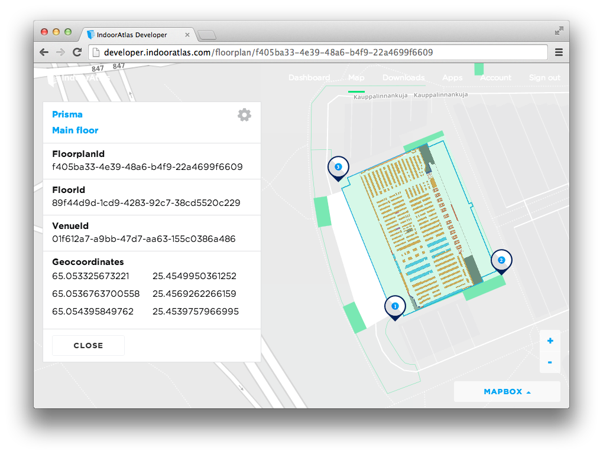

Adding IndoorAtlas framework to your project
- Select the project file from the project navigator on the left side of the project window.
- Select the target for where you want to add IndoorAtlas framework in the project settings editor.
- Select the Build Phases tab, and click the small triangle next to Link Binary With Libraries to view all of the frameworks in your application.
- To add IndoorAtlas framework, click the “+” below the list of frameworks.
- Click Add Other… and select the IndoorAtlas.framework from your extracted SDK package.
- You will also need the CoreMotion and Foundation frameworks, as well libz.dylib and libicucore.dylib.

Alternatively you can drag and drop the framework to your project file structure. Make sure you enable Copy Items to Destination.
Configuring your project
The SDK uses some C++ functionality internally, and thus needs to be linked with C++ standard library.
- Select the project file from the project navigator on the left side of the project window.
- Select the project or target linking against IndoorAtlas framework in the project settings editor.
- Select the Build Settings tab.
- Search for Other Linker Flags and add -lstdc++ there.

Compiling the IndoorAtlas SDK example project
The Xcode project contains targets for positioning and calibration examples.
- Select AppDelegate.h from the project navigator on the left side of the project window.
- Set kAPIKey and kAPISecret to your API key and secret.
- Set kFloorplanId to your floor plan ID.

How to obtain API key and secret
Generate API keys at IndoorAtlas developer, Apps.

How to get floor plan ID
Get floor plan ID from IndoorAtlas developer, Map.
- Select building.
- Select floor plan.
- Copy FloorplanId.
